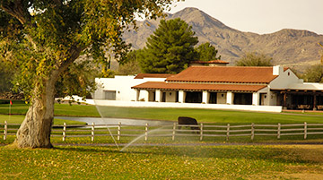
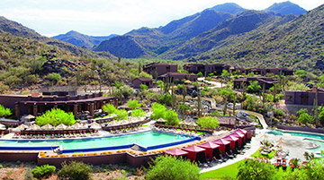

Lodging:

Tubac Golf Resort & Spa, Tubac , 2 nights
Enveloped by mountains, this tranquil Spanish Colonial retreat is set on a 500-acre ranch in the
lush Santa Cruz River Valley. (pool, spa)

Ritz-Carlton Dove Mountain, Marana ,2 nights
A lavish high-desert resort built in harmony with the land's majestic saguaro cacti. Travel +
Leisure World's Best. (pool, spa)
The Best Leaders in Arizona
Acme Adventure Travel has the best-qualified people to lead your trip in Arizona, and our guests back
that up, rating our Trip Leaders an average of 9.75 out of 10 for all-around quality of performance.
Get the facts (and no fluff) on how we recruit and develop the very best people for your trip.
More Leaders to Support You
On our Arizona trips we have an extra leader supporting you along the road—for a total of three,
compared to the industry standard two. So we can be in more places at once, giving personal attention
to guests traveling at their own pace. Here's more on our Trip Leaders.
A Variety of Routes Each Day
In Arizona you head off each morning after choosing among several expertly designed routes—all with
detailed directions, mileage and shuttle options. Unlike trips with one fixed daily route (or worse,
one guide that everyone's obliged to follow), you're free to enjoy the best of the region at your pace
, stopping wherever you want to explore further.
Great Bikes Included
Our custom-designed titanium bikes are best in class. From avid cyclists to easygoing riders, we believe
that everyone deserves a seriously great bike to match their riding style. Learn more about our bike
fleet.
Navigate Your Way in Arizona
Your ride comes equipped with a GPS device, preloaded with all the routes and route options for your
trip. If you prefer to bring your own device, we also have downloadable GPS files and of course, our
good old paper directions are always available. Read more on why our navigation options are the best.
Only the Best Hotels
On this trip featuring Premiere Hotels, you can count on the best lodgings Arizona has to offer. In
fact, the hotels we've chosen in this region have higher retail room rates than those offered by any
other active travel company—even when their trips cost more.
Signature Acme Adventure Travel Picnics
Guests rave about our picnic spreads. Enjoy a welcome break in a scenic spot, or a quick refuel stop
if you don't want to lose momentum. And because we have two vans, one can host lunch while the other
is out providing support along the route.